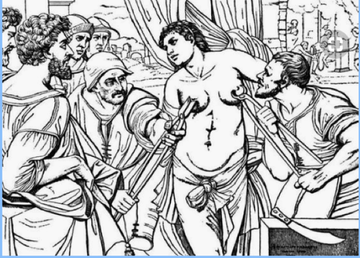

Advanced Psychological Measurement Theory
Moodle course page
Course website
Labs
Content will be updated during the course.
“Advanced Psychological Measurement Theory”
Based on the “What is measurement?” paper (see Documents in Moodle), or any other document, answer the following questions:
What are some classic definitions of measurement?
What do you think of them?
What are the main keywords/concepts typically covered in measurement theory accounts?
Submit your responses in Moodle: assignment: “key concepts and definitions” as 1 PDF file following the convention <last_name>_definitions.pdf
You can/should work in groups, but everyone must submit a document (can be the same for all group members).
Don’t use LLMs blindly; think for yourself!
Sometimes theory prevents us from seeing reality.
We will see a few examples where measurement plays/played a central role (positively or negatively).
The goal is to evaluate to what extent the classic psychological measurement theory is adequate and useful in those various scenarios.
What do these “stories” tell you about measurement?
see also:
see also:
“Scientific” tests were developed to avoid “unfair” diagnosis.
Definitive Resource: The Malleus Maleficarum
Swimming test
Witch Marks
Pricking Test

Tear Test
The accused is read a text about the sacrifice of Jesus; if the accused does not form tears by the end of the story, the accused is presumed to be a witch.
“Witchcraft is real, but…
Johann Weyer’s De Prestigiis Daemonum, 16th century